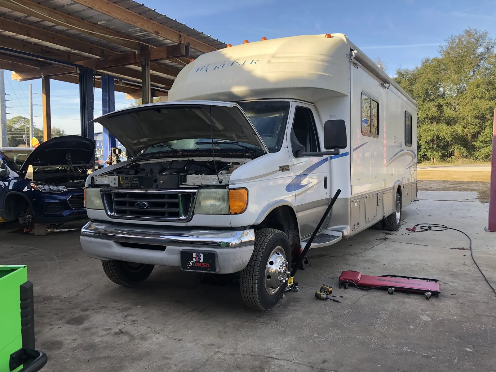

Contact
Let’s get you rolling.
Call (352) 473-3404, drop by 135 Commercial Cir or send the shop the details. Monday to Friday, 8 to 5.
The shop
| Monday | 8 AM – 5 PM |
|---|---|
| Tuesday | 8 AM – 5 PM |
| Wednesday | 8 AM – 5 PM |
| Thursday | 8 AM – 5 PM |
| Friday | 8 AM – 5 PM |
| Saturday | Closed |
| Sunday | Closed |
Eastern Time. Google flags Thanksgiving (Nov 26) and the day after (Nov 27) as “hours might differ,” so call ahead on holidays.
Estimate request
Tell us what it’s doing.
FAQ
Good questions.
What are Turner’s Automotive’s hours?
Monday through Friday, 8 AM to 5 PM Eastern Time. Closed Saturday and Sunday. Google flags Thanksgiving (Nov 26) and the day after (Nov 27) as “hours might differ,” so call ahead on holidays.
Where is the shop?
135 Commercial Cir, Keystone Heights, FL 32656, on Commercial Circle in Keystone Heights, Florida. Their site says they serve Keystone Heights and the wider Northeast and Central Florida area.
Do you work on transmissions?
Yes. Transmissions, differentials and gearboxes are the first services on their site, which is titled “Turner’s Automotive & Transmission.”
What vehicles do you work on?
Their site lists domestic and import cars and trucks, vans, 4×4s and special interest vehicles. The shop’s photos also show motorhomes, lifted trucks and classic sports cars.
Can I drop my car off after hours?
Reviewers describe a night drop slot: fill out an envelope with your details and the problem, put the key inside and drop it in the slot. Call the shop to confirm before you rely on it.
How do I get an estimate?
Call (352) 473-3404 during business hours, or use the estimate form on this page. It opens a pre-filled text message to the shop’s number (please confirm the number accepts texts).
What payment do you take?
Their Google profile lists credit and debit cards. Ask about payment options when you call.